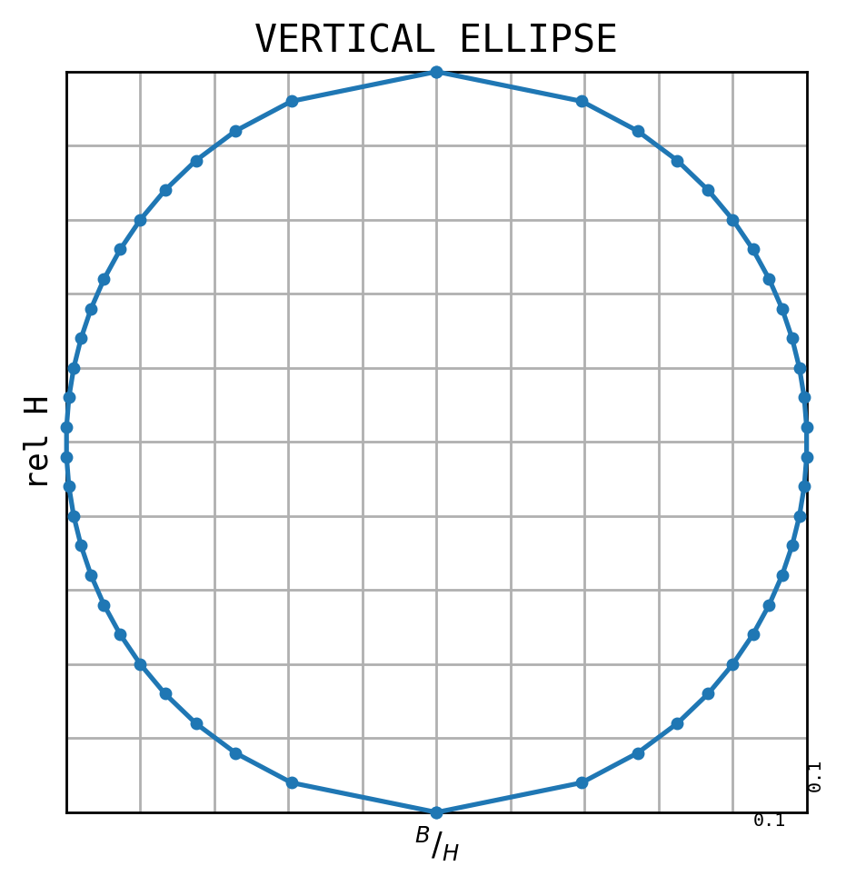

SWMM Standard cross section as an example¶
[106]:
%load_ext autoreload
%autoreload 2
The autoreload extension is already loaded. To reload it, use:
%reload_ext autoreload
[107]:
import numpy as np
from shape_generator import CrossSection
[108]:
import matplotlib.pyplot as plt
plt.rc('figure', dpi=250)
# plt.rcParams
[109]:
def swmm_std_cross_sections(label, rel_with):
height = np.linspace(0, 1, len(rel_with))
cross_section = CrossSection(label, height=1, simplify=False, accuracy=3)
for x, y in zip(height, rel_with):
if (y == 0) and (x in (0, 1)):
continue
cross_section.add(x, y / 2)
return cross_section
[110]:
rel_with = [.0, .6272, .8521, .9243, .9645, .9846, .9964, .9988, .9917, .9811,
.9680, .9515, .9314, .9101, .8864, .8592, .8284, .7917, .7527, .7065,
.6544, .5953, .5231, .4355, .3195, .0]
cs = swmm_std_cross_sections(label='Arch', rel_with=rel_with)
fig = cs.profile_figure(relative=True)
Possible reduction with keyword `simplify=True´: from 26 to 22 points (with Ramer-Douglas, distance=0.001)
[111]:
cs.get_width()
[111]:
0.9988
[112]:
rel_with = [0.0, .2800, .3919, .4750, .5426, .6000, .6499, .6940, .7332,
.7684, .8000, .8285, .8542, .8773, .8980, .9165, .9330,
.9474, .9600, .9708, .9798, .9871, .9928, .9968, .9992,
1.000, .9992, .9968, .9928, .9871, .9798, .9708, .9600,
.9474, .9330, .9165, .8980, .8773, .8542, .8285, .8000,
.7684, .7332, .6940, .6499, .6000, .5426, .4750, .3919,
.2800, .0]
cs = swmm_std_cross_sections(label='Circular', rel_with=rel_with)
fig = cs.profile_figure(relative=True)
Possible reduction with keyword `simplify=True´: from 51 to 29 points (with Ramer-Douglas, distance=0.001)
[113]:
rel_with = [.0, .2980, .4330, .5080, .5820, .6420, .6960, .7460, .7910,
.8360, .8660, .8960, .9260, .9560, .9700, .9850, 1.000,
.9850, .9700, .9400, .8960, .8360, .7640, .6420, .3100, .0]
cs = swmm_std_cross_sections(label='Egg', rel_with=rel_with)
fig = cs.profile_figure(relative=True)
print(f'{cs.area_v=:.3f}')
print(f'{cs.l_u_v=:.3f}')
print(f'{cs.r_hyd_v=:.3f}')
Possible reduction with keyword `simplify=True´: from 26 to 18 points (with Ramer-Douglas, distance=0.001)
cs.area_v=0.739
cs.l_u_v=3.099
cs.r_hyd_v=0.238
[114]:
rel_with = [ .0, .5878, .8772, .8900, .9028, .9156, .9284, .9412,
.9540, .9668, .9798, .9928, .9992, .9992, .9928, .9798,
.9600, .9330, .8980, .8542, .8000, .7332, .6499, .5426,
.3919, .0]
cs = swmm_std_cross_sections(label='Horseshoe', rel_with=rel_with)
fig = cs.profile_figure(relative=True)
Possible reduction with keyword `simplify=True´: from 26 to 18 points (with Ramer-Douglas, distance=0.001)
[115]:
rel_with = [0.0, 0.286, 0.643, 0.762, 0.833, 0.905, 0.952, 0.976, 0.976,
1.0, 1.0, 0.976, 0.976, 0.952, 0.905, 0.833, 0.762,
0.667, 0.524, 0.357, 0.0]
cs = swmm_std_cross_sections(label='GOTHIC', rel_with=rel_with)
fig = cs.profile_figure(relative=True)
Possible reduction with keyword `simplify=True´: from 21 to 19 points (with Ramer-Douglas, distance=0.001)
[116]:
rel_with = [0.0, 0.6667, 0.8222, 0.9111, 0.9778, 1.0000, 1.0000, 0.9889, 0.9778,
0.9556, 0.9333, 0.8889, 0.8444, 0.8000, 0.7556, 0.7000, 0.6333,
0.5556, 0.4444, 0.3333, 0.0]
cs = swmm_std_cross_sections(label='CATENARY', rel_with=rel_with)
fig = cs.profile_figure(relative=True)
Possible reduction with keyword `simplify=True´: from 21 to 15 points (with Ramer-Douglas, distance=0.001)
[117]:
rel_with = [0.0, 0.7000, 0.9800, 1.0000, 1.0000, 1.0000, 0.9900, 0.9800, 0.9600,
0.9400, 0.9100, 0.8800, 0.8400, 0.8000, 0.7500, 0.7000, 0.6400,
0.5600, 0.4600, 0.3400, 0.0]
cs = swmm_std_cross_sections(label='SEMI-ELLIPTICAL', rel_with=rel_with)
fig = cs.profile_figure(relative=True)
Possible reduction with keyword `simplify=True´: from 21 to 15 points (with Ramer-Douglas, distance=0.001)
[118]:
rel_with = [0.0, 0.49, 0.667, 0.82, 0.93, 1.00, 1.00, 1.00, 0.997,
0.994, 0.988, 0.982, 0.967, 0.948, 0.928, 0.904, 0.874,
0.842, 0.798, 0.75, 0.697, 0.637, 0.567, 0.467, 0.342,
0.0]
cs = swmm_std_cross_sections(label='BASKETHANDLE', rel_with=rel_with)
fig = cs.profile_figure(relative=True)
Possible reduction with keyword `simplify=True´: from 26 to 21 points (with Ramer-Douglas, distance=0.001)
[119]:
rel_with = [0.0, 0.5488, 0.8537, 1.0000, 1.0000, 0.9939, 0.9878, 0.9756, 0.9634,
0.9451, 0.9207, 0.8902, 0.8537, 0.8171, 0.7683, 0.7073, 0.6463,
0.5732, 0.4756, 0.3354, 0.0]
cs = swmm_std_cross_sections(label='SEMI-CIRCULAR', rel_with=rel_with)
fig = cs.profile_figure(relative=True)
Possible reduction with keyword `simplify=True´: from 21 to 17 points (with Ramer-Douglas, distance=0.001)
[120]:
rel_with = [ .0,.3919,.5426,.6499,.7332,.8000,.8542,.8980,.9330,.9600,
.9798,.9928,.9992,.9992,.9928,.9798,.9600,.9330,.8980,.8542,
.8000,.7332,.6499,.5426,.3919,.0]
cs = swmm_std_cross_sections(label='HORIZONTAL ELLIPSE', rel_with=rel_with)
fig = cs.profile_figure(relative=True)

[121]:
rel_with = [ .0,.3919,.5426,.6499,.7332,.8000,.8542,.8980,.9330,.9600,
.9798,.9928,.9992,.9992,.9928,.9798,.9600,.9330,.8980,.8542,
.8000,.7332,.6499,.5426,.3919,.0]
cs = swmm_std_cross_sections(label='VERTICAL ELLIPSE', rel_with=rel_with)
fig = cs.profile_figure(relative=True)
